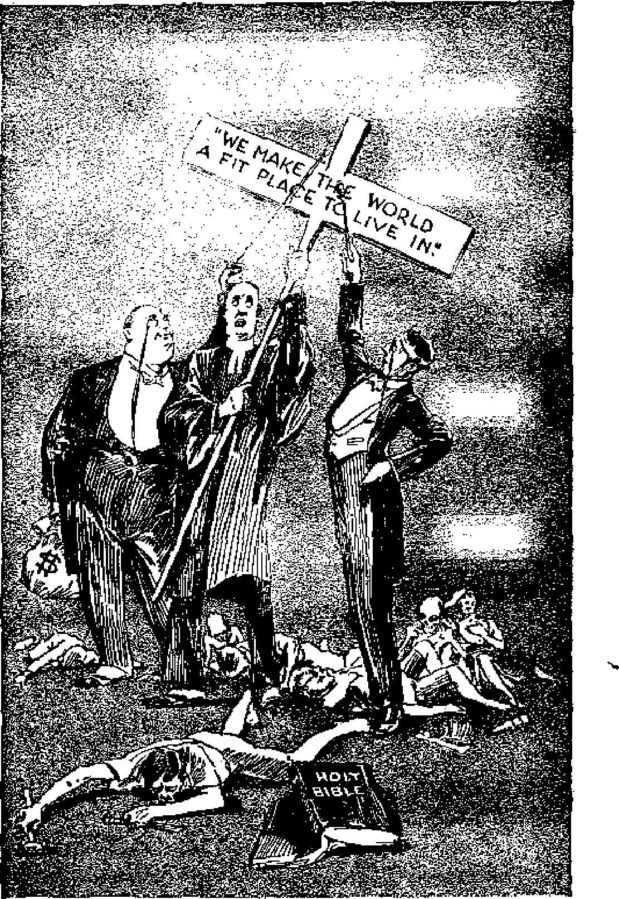

[BLANK]
explained in
Seven Bible Trealises
by
J. F, RUTHERFORD f''
S The Standard
12 The first
Resurrection
20 IDllions Now Living "'il Never Die
29 llealth and Life lor
The People
38 Judgment of the People ”
47 Judgment of the
Nations
55 Judgment of Christians
1 ■------— -----—■— ------— -------------- +
Judge Rutherford's haok, ex-plahlil\!l' the Dible show and prove how the billions who have peopled this earth will each and every Olle: huve a iull, comprehensive opportNnity to enjoy eveylasti^* life on earth in complete happines,;, perfect health and ever-incrMsing deJig-ht.
------------------------------------------------------------------------------------b-
Col'YllTGJt'lw 10:'12 A;>ill PullLli;lHED liT
WATCH TOWER BIBLE AND TRACT SOCIETY Inter1ltltiooa! DIble S!udents Association
Brooklyn, N. Y.,
BJl.A.NI'Il OF lttS:
London, "Mllgdeburg, Paris, Toronto, Sttathfleld, Cape TQwn, BN'l I", Copenhagen, Stockholm, lind other cities.
M0.d6 in L.S.A.
HEALTH AND LIFE
The Standard
THERE are two genf'ral divisions of the human race, to wit, the one that rules and the other that is ruled. The minority elaHs rules the majority class. Al honest persons, regardless of wIueh class they are in, desire to see the peoule follow a course that will result in the general welfare and peace and prosperity. All realize that harmonious action of the pf'ople of any nation tends to bring about the desired result.
A standard is .a guide directing the people in the course that they are to take, and which standard is raised up to enable the people to clearly see that course. In all nations the people in general have had to depend upon their rulers to lift up a standard for them. The rulers desire to keep the people in subjection that they might continue their rule. The commercial, political and religious elC'ments, which constitute the ruling dass of all nations, jointly formulate a standard and raise it up before the pe_o-pIe and advise the people that they must follow such standard if tlley desire peace, prosperity and happiness. This triune "standard" company, of the nations of "Christendom" in particular, in substance says this: "Our organized govern-
ment represents the Lord and by divine right and authority is ruling, al1d all -people should patriotically support the same. We must have more revenue for war purposes, for public improvements, and for salaries of -the rulers; bence the imposition of heavy taxes. The com-mer<^ial, political and religious elements must stand together, and we must 11Rve an orthodox religion j and whatever our indlvidual views concerning tho Bible or religion may be, we must not indulge in the discussion of anything that might be controversial. If you wil follow our standard, it willielld you to peace and prosperity and happiness." The rulers do not advise the people, however, what lord they are serving. The Scriptures say that Satan is the god of this world of "Christendom", and not Jehovah.
With a few exceptions the people have for centuries followed such worldly standards so raised by the ruling class and have learned from experience that the facts do not support the claims made by the rulers. They see the comparatively small number of rich becoming more avaricious and oppressive and that these are crushing out competition and centralizing all th'e power in the hands of a few to the dl':trimcnt of the many. They see fraud, deceit, duplicity and trickery freely resorted to in political affairs and that the religious leaders are marked with arrogance, impiety and ungodliness j hence the people cannot believe that the righteous
The triune "standard" company of "Christendom" f Page 3
Jehovah God would approve of a combi.nation and system such as now rules the world. The peopJe in genera] hDve therefore lost faith in their standard bearers.
All standards held up before the people for centuries past have faiJl?d, and now every nation of "Christendom" 'is in distress and perplex- . ity. Such an unsatisfactory condition could not f'xjst if the scheme of government or standard had divine approval and authority. Vlhy have these standards failed, and why is there so much distress throughout the e-artll! The answer clearly is, Because the people are in darkness concerning ,Jehovah and his Word and have bel'D blinded by Satan the god of this world.
It is written, in Psalm 33: 12: "Bles!3ed is the nation whose Godis the Lord [Jehovah]." While the nations of "Christendom" claim t.o be opE'rat-ing by divine right and approval, not one of them gives its unqualified allegiance tn Jehovah God, and therefore their claim of divine authority is untrue. This unsatisfactory condition has come about in this manner : Men have formed governments and lifted up selfish standards to be. followed by the people. These have ignored the instruction of God'$ Word and relied upon the wisdom of men and therefore have fallen easy victims to the wily foe Satan. The scheme of Satan has ever been to hIrn all mankind away from Jehovah God and to lead them into the paths of selfishness and unrighteou:31 C"ss.
The faets are, alld they cannot be denied, that nearly all of the schools and colleges of the land today teach the theol'Y of the evolution of man, and the origin conc.erning man as set forth in the Bible i. f'ntirply ignored and pushed uside, In the mfiJority of the chmches of the land the ministers arc higher crltics and cvolutio]1ists. Thf's(' pose as the spirItual adnsers of the rom-mei’cial ami political elcilC'nts, and all wnlk on togetller in darkness; and now all the foundations of the '''orld are upside down, How could the people be expected to he benefiteu by following the standards raised up before them by such standard hearers °
Distre'3slJlg conditions have now rf'acllcd a climax, bf'cause Satan's world (which means "Christendom") has ended and Jehovah God has announced his purpose to completely destroy Satan's organization and to remove blindness from the eyes of understandlllg of the people that they may sec and know that Jehovah is the only truE' God, from whom all hlessings flow. Not only are- the people and nations in diRtreRs and perplexity, but they have reached an extremity, Before God proe.eeds to completely destroy Satan's organization, he directs that those who love him shall lift up before the people God's standar(l of righteousness that all peoples of good will may see the :right way in which to go. Ther€'fore this commandment is written, in Isaiah 62: 10, dIrected to Jehovah's
faitlrful witnesf:)cs, to wit: "Go through, go through the gates; prepare ye the way of tl:3 people j cast up, cast up the highway; gather out the stonesj lift up a standard for the people."
"\'T}mt is the standard that J(,hovah commands must be lifted up for ille- people1 That ••meh 1S of first import.ance in that stundard is that Je-llOvah is the only true und hving God. He is the Creator of heaven and earth, and the sonl'ce of life and all attending blessings. He ('reated the earth for man and man for the earth. He is the true and lasting Friend of man. IIis 'Vord, the Bihle, if' the truth and is the light by which the feet of men are guided properly into the pathway of righteou.': ness. All persons must comf' to know that Jehovah is God.
Also, the diyine standard shows that Christ Jesus, the beloved Son of God, is the Redeemer of man; that his blood was poured out in death in order that man might have an opportunity to live; that Jehovah raised up Christ Jesus out of death, exalted him to the hight:'st place in IH'aycn and committed into his hands all power in heaven and in earth; that Jehovah has made Christ Jesus the King of the world and has appointed the time in which he shall judgp the world in righteousness.
Jehovah's standard also discloses that Satan's wicked rule must now come to an end; that Christ J('sus, the world's rightful King, is now upon bis throne and that Christ has thrown S8.-tan out of heaven and that his next great act will b(' the complete destruction of Satan's power in the earth, the destruction of Satan's organization particularly incluuing <'Christendom", and that Hus will take place in the great battle of God Almighty; that, with the fraudulent and wick('d rule of Satan for ever destroyed, right- I eousuess will prevail in the earth forever; and that Christ, the great King invisible to mankind, will rule the world in righteousness, and his visihle repl'cscntatives on the earth wil carry out his rule of order for the general welfal."e of mankind.
This divine standard puints the people, not only to the way of everlasting peace and Dros-perity, but also to the way of everlasting life and happiness. The fact that Jehovah commanded that his standard be now lifted UD for the people is conclusive proof that the time has come when the people must have an opporhmity to know God and his purpO!les. Hence the worldwide educational campaign now carried 011.
Note that the commandment Jehovall gives his witnesses is to '<go through the gates; prepare ye the way of the people". A gate is a way of entrance to the kingdom of righteousI1css. Jehovah'::3 witnesses are therefore commanded to take the lead and show the people the \\ ay that they must enter in to the favor of Jeh(wah and his kingdom. They prepare the way f01:" the people by telling them the truth. They point
out to the people Jehovah's great highway and go up on it in advance of the people in general. ThC'y gflthf'l' out the shnnbliIlg'-stOTIes by S]lOW-ing the prorle that the many doctrines taught by the rc1igioniBts of earth art' false and hence have cau&cd t!Jem to stumlJle. They lift up) not * mun's standard, hnt Jehovah God's standard, which guides the people into evedasting joy and life.
It was Jesns who said that if a man loved Cod he would prove it hy obeying hj,-s conmmanU-ments. Because they love JellOvah there arc today mally men and women going from house to houstl with JC'hovah'fl standard of truth in printed form and exhihitlur; the same to the people. TllOse who hear this mC3Sf.;age may be bf'le ftten thereby. The visit of t11('se men and women to your home is no part of a comrocniul enterprire. They take only a nominal sum of money for the books which they lJring to you and which contain the message of the Lord, in order that more bool\:s may be publiBhed to aid the )1E'ople. 'rhese v;itn(>Sf'.8t5 discharge their l"E's:!Jonsibility to God by bringing to you his tltandard of righteollsness. The l'('sponsihility is llpon you as to w}lether you will heed the message. Satanls agents will try to prevent you from getting this information and from seeing the standard of righteousness which JellQvah commands sllaH be lifted up. Do not permit yourselves to be deceived. You desire life in
happiness, and a government of peace and prosperity. Remember that Jesus said thnt these blessings come to you by reason of knowing ftnd obeying Jehovah God and Christ Jesus whom he has scnt. .
Never in the history of mati has it been so important that the people learn the truth. They must have some aid to know where in the Bible to find the great truths arld how to fit these to the facts. The books that are brought to you are such aids disclosing to you Jebovall's standard. I bid you to be diligent in learning what is upon that standard; and, learning that, you may rejoice and live fore'Ver in happiness.
':J.h e standard of JehOVtl.h holds forth a real bope for the people. Thcro can be no hope without faith; and there can h(" no faith without knowledge, and then R confident reliance upon that knowledge. The promises of imperfect men constitute no basis for hope. The promise of Jehovah a ad is sUfe and certain, upon which the people can wholly rely. His promise is that the government of the world shall be upon .the shoulder of his beloved 8011, who shall be known as the Wonderful Counselor of the people; the Giver of life and happinE'13s, and the Prince of everlasting peace. This promise Jehovah bas made and bound with his oath, and then, that he might further assure the people, he adds, by his prophet Isaiah: 'I }lave spoken it, I wil also bring it to pass.'
The First Resurrection
TlGlIOV^H raised up Jesus out of Ueath, and I the Scriptures declare that such is a guaran-•/ tee that there shall be a resurrection of those who ure dead. "Hesnrrection'> means to bring bach: to life. Many have erroneously taught that all the dead will be raised up and appear within one twenty-fouT-hour day before the Lord. '1'hat tcurhing is entirely wrong. In 1 Corinthians 15: 22, 23 it is written: "For as in Adam all die, even so in Christ shall all be made alive. But every man in his own order; Christ the first-fruits; afterward they that are Christ'S, at his coming." In Revelation 20: 6 it is written: "Blessed and holy is he that hath part in the first resurrection j on such the second death hath 110 power, but they shaH be pl'iests of God and of Christ, and shaill'eign with him a thousand years."
These scriptures definitely prove thatthe dead will be raised up and illere is an order in their corning. Christ Jesus was the first one raised from the dead, and those who have part in the first resurrection v.ril1 share in the resurrection like Ullto Christ Jesus'. It is the resurrection that is first in time and first in importance. The first resurrection relates only to those who are the faithful followers of Christ Jesus, having been ta({en into the covenant by sacrifice and for the kingdom, and who continue fully and wholly devoted to Gotl until the end of their earthly course. To such the Lord said: "Be tllOU faitllfu] unto death, and I will give thee the crown of life."-R.V.
For many centuries the people have been erroneously taught that when a good man dies he goes immediately to heaven. This error is another of Satan's falsehoods, and his purpose in tC'aching it is to destroy the beauty and truth of the resurrection taught in the Scriptures. The Dible plainly says that all men who die go into the grave or tomb and are entirely unconscious and Imow nothing until the resurrE.'ction. The Apostle Paul was a good man and a faithful and true follower of Christ Jesus, and is one to whom is given the privilege to have a part in the first resurrection. Being one of the Lord's inspired witnesses he wrote with authority, when his long and faithful service was done. in 2 Timothy 4: 6-8, to wit: "For I am now roady to be offered, and the time of my departure is at hand. I have fought a good fight, I have finished my course, I have kept the faith: henceforth there is laid up for me a crown of righteousness, which the Lord, the righteous judge, shall give me at that day; and not to me only, but lillto all them also that love his appearing." These words conclusively prove that Paul is oue who receives the crown of life because of his faithfulness, and that this he receives at his resurrection and not until the second coming of the Lord .Jesus Christ. In the first verse of the same chapter he said Hmt iJlE' Lord Jesus Christ will judge the living and Ole dead at his appearing and his kingdom. That fixes the time of the resurrection of the faithful followers of Christ.
Other scriptures sIiow conclusively, and these I have pointed ont on another occasion, that the second coming of the Lord dales from 1914-, when he took his power ns King, and that the coming of 1he Lord to Jehovah's temple for' judgment dates from the spring of 1918. Concerning this the apostle wrote, in 2 Thessalo-ni ans 2:1, that then would take place the gathering unto the Lord of his f ait hful followers, The purpose of eorn.lng to his temple is for juUg-jneiit, and it is stated, in 2 Corinthians 5: 10, that all must appear before the judbIDent seat of Christ. These $crjptures thenefoTe deUnite-ly show that the resurrection of the faithful apostles could not take place until the seecnd coming of Christ Jesus to his temple for judgment. Those of like faith and faithfulness have part in the first resurrection.
The book or Revelation states in terms that there will be only 144,000 who have part in the flrst resurrection. The Scriptures also make it clear as to how one can get into that place of favor, and which wa.y is tbis. to wit: A m[Ho must firf't rf'alize that he is a binner and ill need of a Savior j that the blood of Christ Jesus is the redemptive price provided whereby 1](' may be saved; coming to this kno'vlE'dge he shows his faiH] by fully agreeing to do GO{l's will, which means his conspcration. He is :lnstificd by ,Jehovah Gou and bronght forth as the son of God; that is to say, God gives his word of promise to him that if he continues faithful to his covenant to the end he shall live with Chri:;t .Tesus. llis covenant with God requires lnan to l)e lawful, faithful and true to Jehovah at all times, ant! tu refuso to compromise with Sedan or his organizatiOll. He must be a faithful footstep follower of Chri"t Jesus.
Jesus told his faithful disciples that God had marIe a covenant vdth him for the kingdom, and then said to them, as appears in Luke 22: 28-30: "Ami you are they who have continued with me in my trials. And I covenant for you, even as my Father has covenanted for me, a kingdom, Hlat you may ('-at and l.11'hll;: at my table In my kingdom, and sit on thrones, judging the tWf'lve tribes of ISI'M1." (lJiaglott) rl'his shows that only those fully devoted to God are invited to a place in the kingdom and only those who continue faithful unto death shall have a part in the kingdom. Sueh are the ones that live and reign with Christ, having part in the first rf'sul'l'ection.
The reign of Ghrist for the reconstruction co,"ers a period of a thousand years, otherwise called the Millennium. It is not required by the Scriptures thnt the entire 144,000 mupt begin to reign with Christ at the beginning of his kingdom. Those \\'110 reign with 11im l'f'ipl within that periou of a thousand years. Christ was placed upon the throne in 1914; but the resurrection, even of his faithful apostles, did not bf-gill until three and oIle-halI years thereafter. From and after the beginnillg of the resurrection of tl1ese faithful ones, it is written in Revelation, chapter fourteen, "messed are the df'ad which die in the Lord from hencefortlJ." 1'his shows why the apostle, in 1 Corinthians 15: 51, 52, said: "1Ve shaH not all sleep, but we shall all be changed, in a moment."’ Those who died faithful, such as tile apostles, are il1e first ones resurrected, awl then those on tIle eal'th who thereafter die faithful have an instantaneous change or resurrection. The very moment they die, thnt very moment they are raised to life with the Lord, alld therefore blesEed is their condition.
This is in exact harmony with the statement of Revelation 20: 6, whi<>h says : "Blessed and llOly is he that hath part in the first resurrec-tinn." Both of these texts are beatitude's of the TIewlation and identify a class that are blcs$ed \\"ith greater priYileges than others because of their faithfulness to the Lord. They share with Christ Jesus in his resurrection. That explains \\hy Pall} in Philippians 3: 8-14 $aid tlHlt }]e counted all things as nothing that he might win ellrist and. know the power of his resurrection and participate thercin.
This first resurrection is limited to the royal family that \"-ha11 compose the heaven1y kingdom, and there is a glory attached to it (hat none otller receive. Those who have part in this resurrection are not only blessed, hut they are holy. That means that they are completely and wholly devoted to God and to his ldngdom. Such cannot compromise with this world or its god Satan. They must be absolutely devoted to God and to his kingdom. Such will be slTpremely blessed, as is stated in Psalm 21 : 6: I'li'or thou hast made him most blessed for ever."
Before receiving SUell blessings the followers of Christ must prove their faithfulness and loyalty, and li)t this D\lr"D'i)so ar'G Imt to thft IDo%t severe test. Hence it is written, in James 1: 12: 'Blessed is the man tbat endures the test, for when he is tried, and maintains his integrity with God, he shall receive the crown of life, which is immortality: Of such it is said that the second death has no power over them. In the beginning God only was irrunortaJ. Christ Jesus was given immortality at his resurrection, and those who share in his resurrection shall also be made immortal. And for this reason it is written, in 1 Corinthians 15: 53, "This mortal must put on immortality." All such faithful ones resist Satan to the very end and steadfastly maintain their integrity toward God.
TJJese faithful ones who have part III the nrst resurre-etion "hall he prie:stg llUto God and unto elrrist. JehovaJl haf" made Chrift ,T(,fms Ole high priest for ever) and those who have a purt in his resnrr('ction ure made under-TH'iests of ChriE\t and thrir day shall never end.
These matters here discussed can only be mentioned IH1C'fly. If yon ,vonld have a full f'X-planation thereof I ndvise that you provide yourself with the books. called Light, wideh give a detailed exihanatioii of the book of Hcv-elation. Almost daily there come to you men and women who have entered into the covenant with God to do 11is will and who in obedience to his commandment are bringillg tllis information to you that you may learn the truth. They mnst obey God's commandments in order to be faithful to him. Therefore when they come, know that they are not coming for any selfish reason, but that the message of the Lord's kingdom might be brought to you that you may und1?r-stand his purpose and Ius manner of salvation f for the human race. By being faithful to God and to their covenant to the end these witnesses will have part in the first resurrection and then ",ill have much to do with comforting and blessing the peoples of the earth. The officjal family of God "ill administer the affairs of his kingdom, will always uphold his honor and dignity, and hring glory to his name, and will he permitted to teach the people the way to life and t1l<' grf'at privilege of fMever serving and bon-Oying the name of Hle Most lIig-h,
The first rC'snTrf'ction is limited to a f'1mall number. These arc ili0 ones witb whom Christ I"huTCS his kingdom. To smch the Lord J’cus snid: "'Fear not, little fio:-k j for it is yom- Fa -ther's good pleasure to give you the kingdom." ']'11e setting- up of the Idngdom wil be the TIn-dieation of his word of promise that he would In'ing forth The Seed by which all the faJl1ilies ^{ -tlw. -c"'..U\ %\\'U.\\ Iw \\1i,",':1f.:'i1. '[bAt );'.>:Q.1Xli'tf'l Seed is the kingdom dast:!, or royal family, and under 1he l'f'ign of this Socd, the Christ, a1l1he famili",1'1 of tlle carth \TIll have an opportunity to receive the Llessings of life.
The fact that the Scriptures emphasize the importance of the' resurrecHon of ClITist Jesus and "'peak of it fl.O: the first resurrection implies that thorp will be a ge:!Leral resurrection of others, and it is even SQ. Jesus said, in John 5: 28, 29: 'All in theiT gr:;t.ves shaH ('amp forth.' In Acts 24: 15 it is written: "There shall be a l'esurr-ection of the dead, both of the just and unjust." The gener-al resll rection covers a period of a thousand years, and 'within that period of time all in their graves will be brough.t forth and given a trial for life. Then those who under the test are obedieJlt to the Lord will be given evel-lastlng life. Thlls it is seen that those wh 0 have part in the first resurrection are grmlted immortality by 3 change from hrul an to spirit nature; and in the general resurrection restitution to human perfection and life on tho earth will be given to the people. In thnt period of time the earth will be made glorious and a fit place for rC'stored man to live. At the end of t]l(^ thousand-year reign of Christ the entire universe will he wholly devoted to God, and then all creation together shall prais€' Jehovah. His kingdom is the hope of the world.
THE PEOPLES of this earth are now numw bered by the thousands of millions. Many of these mili ons aTe in the days of theit youth. The average length of human life is now approximately forty years. In view of these admitted facts and of the positive and indisputable truths set forth in the Bible it can now be confidently said that there are millions of these persons now on the e.arth who will never die. That does not mean that they will pass on to Mme other planet and reside there; but it means that they will live on this earth forever, and not die. S.ince life is man's deareBt treasure, surely all thoughtful persons lShould have a keen interest in the facts related to this subject matter.
Let all creatures bear in mind that God is the great Creator and the Giver of every good and perfcct gift. He created roan in his Qwn likeness and image and gave him the right to live on earth forcvC'T upon the spC'cific condition that man would be faithful and loyal to and obey God. The 'Vord of God is true and can be confidently relied upon. What God has purposed, he will bring to pabS in his 0"\"11 good time and way. Anyone, recognizing that J chovah God is all-pO\verfnl and perfect in wisdom, then may be sure that \\'hat God has promised, that he will also do. Jehovah gave man this assurance, when he caused his prophet Isaiah to write: 'I haye purposed it, I wil also do it. My word shall not return unto me void, but shall accomplish that whereunto I have sent it:
After man had been sentenced to death and expelled from Kden that he might die, God 8-pressed his purpose to bring forth a seed, meaning an organized power or government, through which all the families of the earth shall be blessed. That promise he not only made, but bound with his oath. Speaking of tills promise, one of the inspired writers of the Bible, in He-brev- s, chapter six, records that by these two UTI-changeable things, to wit, his word and his oath, in which it was impossible for God to lie, we have great consolation. The fact that God promised tl18t the blessing should come to all ihe families of the earth means that all men shall have an opportunity for everlasting life, because nothing would constitute a rf'al blessing unless. 1.he creature receiving it has life. In proof that life is his greatest hlessing it is written, in Romans 6: 23: 'The gift of God is life everlasting, through Jesus Christ,>
Jehovah ol'ganiz(,d the people of Israel into a nation for himself and used that nation to ll18ke prOFnetic picture.s foreshadowing his purpose and the manner of f>xecuting the same. l'he ru](>1's or 181'3£'1 tnrned to wickedness, and God east that nation away from him for ever. At the time of so doing Jehovah said by his prophet Ezekiel (chapter twenty-one): 'Remove the diadem. and take off the crown; I will overturn it, and it shall be no more until he comes whose right it is, and I will give it to him.' Thus Jehovah declared that with tIle fall of the last lul'g- of Israel no ono should over rule on earth in his name and by his will, until he whose right it is to rule shall come; which means the coming of Christ, earth's rightful King.
Both profane history and the Bible agree that the overthrow of Zedekiah, lsuel's last king, occurred in 606 B.C., and there began the universal rule of the Gentiles under Satan as the god of the whole world. Other prophecies of God show that the period of time that must elapse after 606 B.C. until the end of the 'gentile times' and the coming of Christ, would be 2520 years, which period of time ended in the
MILLIONS NOW LIVING WILL NEVER DIE 23 iall of 1914. This dnte is fully and completely supported by the teslimony of Jesus given in his great prophecy rceorded in 'Matthew, chapter twentyfour, He said tbnt the time would be mirJl'cd by the World Wnr. famine aod pestilence, snd that these would be tlte begjrming of sorrows lea.iug to the complete downfalJ of Satan's organization. These things came to 11MS us foretold in 1914, Since th a t day other prophecies mentionoO hy Jesns are in eoorse of fni-Ultnent And turther snow that we are at the rond of the wodd. thnt Christ has come, nnd thl'lt God has given Wm the right to rule the worin accord^ ing to his promise. The time is thereLore def_ initely fixed, Satan has already been cast ont of benveji nnd is now confining his operations to the eaatb, trhiclJ explains the F/-llson for so juuch crime and wickedness now abroad. The facts and the Scripturul proof are Uiat the next great nct of Christ is to destroy Satan‘s ojgani-zntion at Armageddon and tbat such wil be the last troubJe Dpon the earth. Preparation is now in progress {or tbat great and final bahle of .Armageddon; and, following it, must begin the restitution bJes::ings of the people according to God's gracious promise.
Jesns specifically says to his folJowers that betweeu tho date or the conclusion Of tlie World War nnd the tiwe of the battle of A^ggeddon they most give testimony to the people and inform them of what is about to oome to rass.
Hjs words are in Matthew 24: 14: ('This gospel of the kingdom shall be preached in all the ""orid for a witness rrnto all nations i and thm shall the end come." The witness work in obeJience to that conunandment is now in progress. It is carried on by radio, by books containing the message of the kingdom, and by frequent visits to the nomes of the people. Already more than one hundred and ten million books containing the message of the kingdom firc in H!e handli of the people, and the work is on the increase and is nearing a conclusion. The purpose of this work is not to convert the world, but to give in-fonnation to the p0ople; and immediately following the completion of that witness work, JeSUS declares, Armageddon shall be upon the world in a trouble such as never before was known. In that time of trouble millions will die j but the Scriptures show that other millions will be carried through the time of trouble and survive. God says to the pe.ople through his prophet, in Zephaniah, to seek meekness and righteousness, and you may be hid in that time of trouble. It follows that those who are thus favored may be taken through the time of trouble. It is reasonable to conclude that those 'who are now hearing the message of truth will be such favored ones. All the facts show that Armageddon is only a short time away, and that period much Ie-55 than the length of a generation.
What, then, 'wil be the work of Christ Y The Seriptures answer, in Acts, chapter seventeen, tbat then will follow the judgment of the world in righteousness, which means the giving to each one a trial and opportunity for life. In 2 Timothy 4: 1 it is stated that the Lord Jesus shall judge the living and the dead at his appearing and his kingdom. It is certain that he will first judge the living on earth. These must be brought to a full knowledge of the truth and given an opportunity to prove their love for and devotion to the Lord and to his righteous government. The fact that God gave his word and oath that they shall be blessed, and the further fact that the blessing is life through Jesus CJlrist, is conclusive proof that all those who do obey shall receive the gift of life and shall not die. Whatsoever Jesus stated is the truth, because he spoke with authority from Jehovah. In John S: 51 Jcsus uses these words: "Verily, I say unto you, If a man keep my saying, he shall never see death." It 'Would be impossible for anyone to keep the sR),ings of the Lord until he first receives a knowledge of them. Now the people are beginning to learn something about God's gracious pro1lision through Christ and his kingdom j but when all hindrance is removed and blindness taken away from them, then they shall see and understand the truth. That will be at the very l)eginning of the restoration work of Christ. Then, says Jesus, tllOse who obey or keep sacred the truth they learn shall noyer see death. Surely there will be ^li-lions of people taken through that time of trouble and given a knowledge of 1he truth who will gladly obey; and, that being so, those millions will live and never die.
The witness work that Ib now being done will not bring the trnth to all th!" millions of the world. The chief purpose of giving that testimony is as a warning find to serve noti('c upon the people and the rulers, God by his prophet Isaiah (chapter twenty-five) shows that blinn— nesl'1 shall be removed early in the kingdom, and then the people shall i‘ecogiiiz(' God's irovision for thC'm throngh Christ and ^'wil gladly sny: fThis is onr God, we have waited for 1ilm, and now he will bless us.' In corroboration or these words Jesus said, as written in JoM 11: 26: “AVhosoevcr liveth and believeth in me shull never We." The people now begin to believe; and as others get a kno"ledge, they will believe the truth, and all who win obey the Lord nre iSUTe to rcceivfl his blessings according to 1ii5 promise and shall never die.
The book called Life, millions of copies of which arc hi the hands of tJje peopl(', and copies of which are brought to your door, give the complete Scriptural proof that millions now living will never die. Therein is set forth in the prophecy of .Job the truth concerning the restoration of man to health and life. In the thirty-third chapier of that prophecy mankind is described as sick and afflicted, enduring great pain fwd sorrowi and headed straight for the gmvo. Then the prophet shows man b£ing brought to a kno-wledge of thp truth that Christ is his great Hedeemer and KiJigi then, says the scripture, man sJmU Dray unto God and the Lmd will be. favorablo unto liim and render unto man his rightcomme8::>, meaning’ that he will give to man thf' blessings of his right eous government which man so much craw’s. What will be the result' Tho Rcriptures answer in thpse words: •God shall be gracjons unto luan and restore him, and man's flesh glinll become fresher than that of a child and he shall return to the days of bis youth.' That means the blessings of everlasting," life which God has promise d and which he will br s tow through Ch ri st upon al those who obey his righteous law.
Even though mcn lave be.en very bad, as millions are today, God by his Drophet Ezekiel {chapter eighteen) shows that if such tmn away from thpir unrighteous course and tIo right when they learn the trutb, thoy shall live and not die. Without a. question of doubt we a re now ill the most important period of time yet experienced by man. It is the transition period, meaning that \\'C are now passing out from the old and wicked rule of Satan and into the glorious and righteous kingdom of God undpr Christ. For that reason, among others, God is now giving the truth to the people. .Al tlK-se scriptures, and all the facts now well known to exist, prove that the downfall of Satan's organization and the beginning of restoration are only a few years away at most. For this reason it can now be confidently said that millions now living will never clie. I urge upon you to be diligent to obtain a knowledge of God's gracious provision for mankind, take your stand on the side of th(> Lord, seek meekness and do right, and be in liM for the greatest blessings that could possibly come to creatures and thut are certain to shortly be granted by tIle gracious hand of Jehovah God.
His kingdom is described, in be-autiful poetic phrase, in Revelation, chapter twenty-one, as coming down from God out of heaven prepared as a bride adorned for her husband. Til s bespeaks a happy and blessed time for man, a time of rejoicing, because God's promised blessing made centuries ago is now to be fulfilled. The Revelator then continues in these words: "And I heard a great voice out of heaven, saying, Behold, the tabernacle of God is with men, and he will dW0li witlI them, and they shall be his people, and God himself Rhall be with them, and be their God. And God shall wipe away all tears from their eyes; and there shall be no more death, ncither sorrow, nor crying, neither shall there be any more pain; for the former things are passed away. And he that sat upon
HEALTH AND LIFE FOR THE PEOPLE 29 the throne said, Behold, I make all things new. And he said unto me, 'Write ; for these words are true and faithful. "-—Revelation 21:3-5.
These words were uttered by Jehovah God through his great prophrt Christ Jesus 3Jld describe the blessings that are coming to men through his kingdom ; and since the kinguom is at hand, this is further a conclusive proof that millions now living will never die. The more fully you understand this great and beautiful truth, the more you will want to praise Jehovah God.
•
THE majority 01. the human "raoo aTe sick both in mind and in body. An unhealthy body frequently results ina diseased mind.
Practically all persons have some ailment. Not one enjoys perfect health and real life. Men have put forth their best endeavors to .find the way to health, and the result is that in the course of time even the strongest become- sick and die. If it is possible to learn the way to perfect health and everlasting liie, then surely there could be nothing of gre.ater importance to man than to gain a Imowledge of that way. Jehovah God is the Giver of life everlasting, and his words point man to the means of gaining perfect health and life. It is worth your while
to examine G od':: Word eoiiceniinl:l' health and life and then dptermine whether Or not you wish to make an effort to obtain these desirable things.
The wry oppointe of health and life is 8ick~ n€'lS and de-aUl. The l'f'al canse of t-ickness and death must nl'bt he known b('£o1'e onp can appreciate God"s rCDlC'dy the-refor. SicloH'f's and death must b(' removed in order fnI' health and lift' to be perpetually enjoyed by man. The {'ause of dii:'-eal'C and death is statpd in plain terms in the' Bible. Adam, who ,vas God's direct creation, was rnaclc peTfect in health und given the right to life upon (>ondltion of his complete obediencp to God's law. The Scripiurps declare that aU of GOIl'o: creation is prriec1., which is further p.roof that the original man vas a perfeet creature with p('rfpct health. God pnL man to the lest in onlel' to give man the opportunity to prove his loyalty and devotion to the Lord. The eatino; of the forbidden fruit probably appeared to Adam as a small thing, but the higger thing was his act of dis(ihedien('« to God's commandment. The law of God plainly stated that any wlllful brE'f11ring of that law by perfect man would result in death. ,Vl1Cn put to the feRt Adam did v.rillful\y dlsobey God's law. God mUflt be true and consistcnt and therefore must enter judgment against Adam in harmony with his law. The judgment of God prononnced against man app('ars in Genesis, chapter three,
-in these words: "And unto Adam he said, Be-cau::,c thou hast heurkeIlcd unto the voice of thy wife, and hast eaten of the tree of wbien I com-mandod thee, saying, Thou shalt not ('ut of It; emsed is the gronnd for thy sake; in sorrow shalt thou eat of it all the days of thy tife. ThoIns also and thistles slJall it bring forth to thee; and thon shalt eat the herb of the field; in the s\vpat of thy face shalt thou ('ut hread, till thou return unto the ground; for out of it wast thou taken ; for dust thon art, and unto dust shalt thou l'eturn."
There is in this judgment no mention of eternal torment. Gotl could not consistently sentence man to eternal torment, because Blat would have been contrary to his law; and for that reason alone the doctrine of hell tOTment is wholly false and the pToduet of the fertile liar Satan. Only Eden was perfect, and all of the eurth outll-ide of E.den wa<; unfinishQd; henee the words in tIle judgment : «Cursed is the ground for thy sake." The word «cursed" means unfinished. Eden provided man win] all the necps-sary food, hut after IllS expuhdon therel'l'om he must earn his bread by hard labor. Such labor has really been a blessing to IUan to keep his mind nnd body employed; hence the unfmished earth was for his sake. The judgment against Adam was enforced over a long period of 930 years. That gave him plen11 of time to meditate on what he had done and also for his children to be bol'l.
In Eden all the fruits, being perfect, were well balanced and would sustain life 'vithont sickness. Outside of Eden the fruit was imperfect, and the usc thereof produced disease and sickness, which aft er a long period of time resulted in death. God had formed man out of the dust of the earth; and when Adam was dead, be returned to the dust, and since then has been completely out of existence. This is the plain Bible statement as to how sickness and death entered into the world and destroyed health and life.
But how does that judgment affect all men' Adam was the natural parent of all mankind. God gave to him the power to produce children, but this he did not exercise until after Jie was under the sentence outside of Eden and undergoing the sentence of death. The law of inheritance is that the children are visited with the weaknesses and sickness of the father; consequently the man, under sentence of death and undergoing the execution thereof, could not produce perfect children, but all his children would inherit and did inherit the imperfections of the father. Every man that is imperfect is a sinner in God's sight. Romans 5: 12 states the divine rule in these words: "'Wherefore, as by onc man sin entered into the world, and death by sin; and so death passed upon al men, for that all
BEALTH AND LIFE FOR THE PEOPLE 33 have sinned." It is therefore sin that is the primary canse of all slcknrss flJId death and is the evil cffect rE'snlting from the violation of God's law by the first man.
Jehovah God alone could make the necessary provision for maIl to again have health and life, and this he has done. To deceive the peo-pIe Satan brings forth a faJse remedy. First he induces men to tea{'h that thele is no death. Jesus said that such was Satan's first lif'. Thon Satan gets up a religious organization and falsely attaches the name of Christ thereto in order to mislead tll(' people. This organization is called "Christian Seienee" and teaches that there is no death and that il health or sickness is a mental conclus.ion and that men and women can hf'al and give health to all who exercise faith in said so-called "science". Each one of these announced remedies is in full contradic. tion of God's VI'ord and his announced purpose through Christ. This shows that many persoIls of good wiII have been inveig-Icd by the Devil into his trap of so-callod "Christian Science" and bodily healing. It is true that JeSllS did some healing of thc sick when he was on earth) but he stat('d that such was merely an example foreshadowing the great work that he would do in his kinp;dom. It also served to establish the faith of the people in him as the Messiah. So far as it is possible, Satan uses his power to cause some healing from sickness, his very ob-
jed Ix’ing to turn the people away from God. One thing all must admit: that no one who claims to have been healed by the so-mlled "Christian Science" method ever stayed continually well, but in tJie course Df time died, and even the liNl.l-ers tbcuiseIYes grow sick and die in like manner.
God"s remedy to give health and life to the people is complete. If you will Tead the hook called Reconciliation. and companion hooks that are brought to yon. therein yon will find ad the Bihle prool bi’uring upon these very important questions. In brief. God's provision for mun is this: The judgment against Adam must be , satji'died, and th’& couJd be done only hy tJio giving up of a perfect human life. The death of Adam, of course, satisfied that judgment; but before it was fully executed God made provision for another to take Adam's place iji death, and in due time all mankind shaH be released from the pen alty of death and the effects thereof. God's law provides that a life may be substituted for a life. There was no perfect offspring of Adam; hence no man could take Ine place of Adam in death. In his own due time Jehovah sent Jesus to the earth. Jesus was made a perfect man, free from all !'1ID. He was not the offspring of Adam, but the direct creation of God; hence he was qualified to take the plare of Adam in death.
God promised that he would ransom man from death and the grave. That means that he would provide a substitute for Adam and that throllgh that :,;ub<:tltute the right to life would a.gain be granted to man. liVh('n Jeeus came he :"aid : '1 carnt: to give my life a ransom [lnd that the people might have life.' Again, he said: 'I give il;.' hllman life for the li1'(' of the world.' The perfect man .Tesns wa:; put to death, and God rai1'>ed np out of death .Jesus Christ the divine and imm6rtai One. Chrio:t JClillS then appeared in heaven and prf'sf'uted the value of Ilis human SaCl'l/1('e in behalf of man, bece.usc it is written that Jesus Christ by the graee of God died for all men and that lIe appeared in heaven for us. This is a guarantee that some uay f'Jl men shall have an opportunity to be raised to health an<l life. Before ber;mning the restoratil)ll of manl,-ind God proct"f'U8 to do another work, to wit: he causes the preaching' of the truth, and hy this means takes ont from amon,Q;l't the people those who are willingly the follo" era of Christ and who lwcome his witnesses. Then Chl'i<:t comes the sf'Cond time, and the restitution \YOJ'k begin,,: after his coming and the setting up of 11i"l kingdom and after ile 1mB onsted Satan from heav('n and destroyed his org[mization in the earth. All the prophpts foretold thut comijig time of blf'ssednesR for the people. lfoved by the spirit of God Peter after Pentecost tpo:tified, in Acts, chapter three: "Times of refreshing shall c-,omc from the ! ta('e] of the Lord ; and he shall send .Jesus Christ,
Wllich before was preached unto yon; whom the heaven must [retain] until the times of restitution of all things, which God hath spoken by the mouth of all Ids holy pr-ophets since the world began. For Moses truly said unto the fathers, A prophet shall the Lord your God raise up nnto you of your brethren, like unto me ; him shall yo hear in all things, whatsoever he shaH say unto you." TIils is proof conclusive that the only remedy for health and life is by and through the administration of God's great prophet, Christ Jesms.
The Scriptures plainly state that at the coming of the Lord Jesus and his kingdom he will judge the living and tll(' dead and -give to all the opportunity for health and life. Hc0ms now come, and as soon as Satan's organization is destroyed he will hegin his judgment and blessing upon the people. The people will then learn what is the right thing to do, as it is written in Isaiah, chapter twenty-six, '1Vbcn the judgments of the Lord are in the earth, the inhabitants of the world will lcarn righteousness.' The meek are those ",ho are willing to be taught, concerning "thorn it is 'wTitten, in Psalm 23: 9: "The meek will he guide in judgment, and the meek will he teach his way."
At the same time the Scriptures dedare that the earth shall yield her increase for man's good. The blood of Christ bought the TIght to life for all men, and it now remains to apply
HEALTH AND LIFE FOR THE PEQPLE 37 the benefits of that ransom and teach the people the way to life. As Eden, the only finished part of the earth, produced perlC'ct food, even so the Lord wil lllukc tJw earth to yield its i1lcrease and produce pcl'fect food and will teach the people bow to eat il; and, the people thus learning of God's gracious provision for them through Christ Jesus, and rendering themselves fully in obemence t11ereio, the result is certain to be a restoration to hoalth and life.
In proof of this, note these words in the Bible, at Jeremiah 33 : 6: "Behold, I will bring [them] health and cure, and I will cure tlleIl , and will reveal unto them the abundance of peace and truth." Thus it is proven that a lmowlcuge of the truth, and obedience thereto, is essential to health and life, even after that begins to be ministered to the people. Then, in corroboration of this prophecy, it is written, in Isaiah 33: 24: 'And the inhabitants shall no more say, I am sick, because the people shall be forgiven their iniquity: Those who are obedient to the Lord will not only be made IlCalthy and strong, but be granted everlasting life as a gracious gift from God. In Romans 5: 18, 19 these words appear: j'Therefore, as by the offence of one judgment came upon all Il1en to condemnation ; even so by the righteousness of one the free gift came upon all men unto justification of life. For as by one man's disobedience many were made sinners, so by the obedi-
ence of one shall many be made righteous." This means that every one will have th0 opportunity for health and life. Sidmess and death are man's great enpmies. The"e enemies shall be destroyed, because it is •written, ill 1 Corinthians 13: 23, 26: "For he must I’eign, till he hath put ulJ enemies undrr his feet. The last enemy that shall he destroyed is death," God's kingdom is the only means by which man can obtain health and life everlasting. That kingdom is at the door.
I
•
WHEN announcement is made that judgment is about to be rendered, those who are involved await the decree with fear and trembling. For centuries the peoples of earth have been told to expect a coming judgment day. False teachers have led the people to believe that thc (lay of judgment will be a time of intense sorrow and suffering. It is the cx-pressed wil of God that the people r"hall know the truth upon this important question, und his time has come for thcm to get the truth.
Satan the Devil, working through his representatives on earth, and particularly those of '•organized Chrifltianity", so called, has deceived the rulers and the people. With the execution of God's jUflgment upon the nations at Arma- .. geddon Satan's inflU8nr'C wil end, and concerning Wlli('h it is ,nittell, in Revelation 20: '3: "1'he Lord shall bind Satan the enemy that he may deceive the' nations no more: Imll1ediately thereafter mllst hegin the judl:,'ll1ent of the people, which means that they must lx> Imt on trial before the Loru. Concerning tbis the Blble, at Acts 17: 31, says th[lt God has appointed a day in whieh he will judge the world in righteousness by that man, Christ JeSlls, whom he hath appointf'd, whereof he has given assurance unto all men in that lJe:,lius raised Jesus Christ from the deac]. Other scriptures show that the jlldg-mcnt of Christ toward the -people will be ri;!;ht-eous, and this text shows that the judgment wiJI take place at a timf' when righteousness is on the earth and when there will be notlling to deceive the people. That time of j'ndgment, therefore. must be a happy timue for all who will love that whicll is right and WllO try to do rig-ht.
For many centuries the clergy of "Christendom" have tuught the people that all l1uve been on trial during the past alid that the destiny of each one if, fixed at the time of death and that the jndgmrnt of tIle I)ord is merC'ly to confirm what had [dready been determined at death. Such teaching and conclusion al'e entirely wrong. God's law is just and right. He y;ill not put anyone on tr1al without first informing that one of the terms of the trial, bE'canse his Word so
declares. 'Almost all people have been krpt in total ignorance of God and his purposes. It is therefore first necessary to bring them to a kno,'ledge of the truth, and this will Ue the first work of the judgment day.
Knowing that Satan has been the one who has deceived and 11linded the people, the promise of the Lord is that when Satan is bound blindness shall be removed that the people may see and undE'rstand the truth. In proof thereof God's prophet Isaiah, in chapter twenty-five, records this prophetic promise, that the Lord will destroy the face of the covering east over the people, and the veil that is spread over all nations ; and this he will do in the judgment day.
With such blindness removed the people will See and understand the truth and wil recognize that .Tehovah is the only true God and the real friend and benefactor of the people. In that same chapter the prophet, speaking to the peo^ pIe, uses these words : "And it shall be said in that day, Lo) this is our God; we have waited for him, and lIe will sa.ve us ; this is the Lord j we have waited for him, we will be glad and rejoice in his salvation."
All the people that have ever lived will, at the beginning of the judgment, be either dead in the gra.ve or alive on the earth. Jesus Ghrist gave his life a ransom for all of these j therefore nll are properly spoken of as "the ransomed of the Lord". The prophet, at Isaiah, chapter thirty-five, says: "The ransomed of the Lord shall return" and come unto Ood's orgnnization, which is headed by Christ JC'siis the Chief Judge, and oI which the tTue and faithful overcomers form a part. Whence wiU these ransomed people come 1 Tht'Y will come from every part of the earth and the dead will be fi"\vakcned and brought out of the graves. This is the same time mentioned by Jesus, when all tlmt are in their graves shall hear his voice and be brought forth. WIiY will they come to the Lord and his organization 1 They come for trial and judgment. Each one will be given the opportunity to prove that he loves righteousness and wants to do right.
There will he no secret meetings of lawyers and judges and side conferences in that trial. That everything will be open and aboveboard, that no one "ill be deceived and that all wil have a full and fair show, is fully proven by the promise in Isaiah 33 :8, which read:o: "And an highway shall be there, and a way, and it shall be called, The way of llOliness ; the undean shall not pass over it; but it shall be for those ; the wayfaring men, though fools, shaH flat err therein,"
A highway :rppresents a clear and unobstructed road to travel. It means, then, a clear and unobstructed way to learn the truth, to be obedient thereto, and to return to God, The people will not be clean at the beginning of restitution, but must c1<'an up and devote themselves to the Lord in order to go uI?on the highway. Neither "the Dcvil nor any of hts agencies, nor any other unclean or wicked thutg, will f'V('l' he upon that higlnyay or be permii.tcd to lJiIJ(ler those' who are faithfully servillg God. Jehovah's faithful w:itucf;ses are UpOll the highway amI arc appointed and act as leaders of the people by di. recting them in the right way to ('Dter into the H^5i<d(!"lJ:!. It i.£, a "way of. h.f!^^S."t"\ be^.\i<:'e wholly tlevotrd to Jehovah.
The Bible pictures the Devil nndf’i’ 1hf' spnbol of a vicious lion and his visible organization on earth under the symbol of a beast. The Lord gives assurance to the 11coplc that neither Satan the lion, nor any cruel oppressive money power, nor political organir.ahon. nor false preachers shall he there to dccrive the people and lJinder them in gaining and obeying tIle truth. He gives his aSRurance in these words of the prophet (Isaiall 35: 9) : "No lion shall be thrre, nor any ravenous heast shall go up tllereon ; it shal l not be fonnd thC're ; but the redeemed shall walk there."
The "redeemed" are all of the people, and all such who will do right shall walk in thC! way of righteommess and become righteous. As earth's ransomed millions learn the truth they WIll be happy and greatly rejoice because tlwil' deliverance and blessing has come to them in the day of judgment. In proof of that the prophet says :
<rAnd the ransomed of the Lord shall return, find come to Zion with songs, aud eyerlasting joy upon their heads ; they shall obtain joy and gladMRs, and sorrow and sighing shall flM awny,"
The .Jewish clergy were proud and haughty and austere and oppressive. They sought the. favor of Ole rich and influential, while they made the bmdcns of tRe poor grievous to be borne. Jesus Raid of them, in 1Iatthew, chapter eleven: 'It shall hI:' more tolerahle for the people of Sodaro in the day of judgment than for yon: The people of Sodoru were extremely immoral; but they were totally ignorant of God, and therefore God has promisC'd that he will bring them out of the grave and give them a knowledge of the truth that they may have a trial under righteom; conditions; and it will be easier for them in that day of judgment than it will be for the bypocritical clergy who knew Jesus and yet who willfully denied und persecuted him.
Have conditions changed 1 Are the dergy of this day austere, haughty and proud, and do they seek the favor of the rich and the influcn-tiaU Judgr- from observation for yourselves, Concerning all such in the time of judgment the LOl'd says (Isaiah 10: 33) : 'The high and haughty ones shall be Lrought low and humbleu.' But how about the poor? The poor man now has little or no show hefore the courts. And will it be the same way during the great day of judgment of Christ upon the prople 1 No;. the poor will then have all equal sJiow with all otberst because it is written, in Isaiah 11: 4, 5: ''With righteousness shall he judge the poor, and reprove with equity for the meek of the earth: and he shall smite the earth with the rod of his month, and with the breatli of 111s lips shall he slay the wickeU. And righteousness shall be the girdle of his loins, and faithfulness the girdle of his reins."
A meek person is one who is willing to be taught and anxious to learn. When the meek receive a lesson they will be glad to profit by it. All 8iich will have their trial before the Lord under most favorable conditions. That it will be a happy time for such poor and oppressed ones, who are meek, the proof is given in the words recorded at Psalm 37: 11: "But the meek shall inherit the earth, and shall delight themselves in the abundance of peace." Again, it is written, in Matthew, chapter five: "Blessed are the meekj for they shall inherit the earth!'
The Lord states, at James, chapter five, that the cries of the poor and oppressed have reached liis ears and that his time to take an account with tlw oppressors and relieve the oppressed is at hand. In that judgment the oppressors shall be broken anU the poor shall receive God's favor. In Psalm 72 the Lord says of such: "He shall judge the poor of the people, he shall save tho children of tlie needy, and shall break in pieces the oppressor . . . . For he shall deliver the needy when he crieth; the poor also, and him tlUlt bnth no helper. He shall spnre tbe poor and needy, and shall save tlie souls of the needy.” To Abraham Jehovah ronde promise that he would raise up a seed that would bring blessings to all the families of the earth. God caused MoS2S to write down the prophecy, set forth in Dnuteronomy 18: 1.3, ..hich says: "The Lord Uy God will raise up \mto thee a Prophet from the midst of thee, of thy brethren, U1;:c Ulto me; unto him ye sh all hearken," These two grea t prophecies refer to the Ramc One, to wit, Christ, who is the seed of promise, and Christ the King, who is the great Prophet, Priest and King and Judge, who shall try and bless all the people wlio obey bis law.
The clergy of "organized Christianity"’' have repeatedly told the people that aU the unjust and unrighteons go to eternal tonnent at death and that jn hell they win be forever tortured. Such is a defamation of God's name and word. Jehovah is just and he is the God of love, and torment is wholly repugnant to love and justice. What good could result to anyone by tonnent' God ^wil torment no one. Almost all people have 'died in sin and without n knowledge of God and his purposes. They must know the truth. before they are put on trial. They will therefore be brought out of death. as imperfect creatures, and the truth win be giveji to i1i('ill. In proof of this it is -written, in il.-"ts 24: 13: "‘Have hope toward Cud, ...that there shall be a resurrection of tli(> dead, hoth of tJw .just and unjust."
Ali persons by reason of inheritance arc born sinners, and it is writte-n, in 1 Timothy, chapter one, Christ came to the world to save sinners. A wicked prr:-Olln is one Who first re-ceivcs the truth and then repudiates it and despise" God's law. Judas was one of tile wicked, and the clergy werc likewise, because they hired him to betray Jesus and bribed the !'\oldiers to try to preyent ktwwledge of his l"e!'\urTcetiotl. The judgment of each is written : "Good and upright is the Lord : therefore wi11 1e teach sumers in Hie way. The mock ," 111 11(> gnide in judgment, and the meek will he tea('h his way," "The Lord preserveth all them that love hjm; but all the wicked will he destroy."
India and China are fuJI of an ignorant and degraded race; but in due time all of these shull be given the truth and <'leaned up and given an opportmllty to receive life, because God has promised that through Christ all the families of the earth shaD havE' an opportunity for the blessings of llfe. God has not delayed these lJles!'mgs, but he has awaited his own good time to bring forth his kingdom and set it up under Christ, vindicate. his name and blos& all those who give honor and praise to mm and his word.
TIlE DIVINE record at Habakkuk 2: 20 reads : "Jehovah is in his holy temple; let all the carth keep sile-nce before him," (.A.R.v.) ']'hi8 and athol' prophecies written centuries rigo shall be fulfilled in the last days, as God has declared. We are now at that timo. Jehovah 1ms clothed his lJeloved Son with all power and authority in l1eaven and earth and sc>ated him upon his throne as the great Judga of all creation. The Scriptural proof submitted on another occasion shows that Christ .Tesus came to the temple of God in 1918 and began his judgment, lirst at the llOuse of God, and quickly thereafter follows the judgml'mt of the nations of the earth. Now therefore says the Lord: "Let all the earth keep silence." This means that God has a message to deliver to the people and he commands that they Ileal' that message.
The word "earth" here used symbolically represents the visible organization of the peoples and nations of the earth. There are three spe-cilic elements of men that make up the visible and ruling powers, and these urc, to ,yit, the commercial, the political, and the religious element. While the peQJlle cnst their votes f(n the selection of men to office, they have nothil1g to say about the rule of the nation. Th€1.'e is a proverb in the land which says, "Money talks"; and those WllO seek favor and influence yield readily to the power of money. In 1 Timothy 6; 10 it is written that "the love of money is the root of all evil". That does not mean that the inanimate tl1ing called "money" is evil, but it means tlmt the love that selfish men have for money and the pm-ver it brings breeds evil or injury to their fellow creature. Although there are one hll dred and twenty millions in the United States, less than three hundred men control the greut corporations and money power of the land. At the same time there are many millions of people who desire to carn an bonest living but who are deprived of so doing, and this in a time of the greatest material wealth the nation has ever known. It is doubtful if any of these ultrarich ever stop to consider how many people are suffering for the necessities of life. Their love for rooney blinds them to everything else but the gain of more power and influence.
Greed has caused the greater banking insti- , tutions to swallow up the smaller ones. The small merchant is forced into bankruptcy because of the oppressive power of combined wealth. The farmer grows his crops by much laborious effort, only to be compelled to sell tllcm "at a sacrifice or loss. Many day laborers work for a wage inadequate to properly support themselves and families, while many others are llTIftble to find employment. The greatest law_ yers of the land are in the employ of the corporate money power, and few, if any, able lawyers are looking after tJie gC'ocral welfare of th(t common people. A great public service cor-pora(ion bas a selfls}j desire to illcreas(> its holdings, and to do 80 it induces the law-making power to grant the privilege, and t1wn the canrts uphold its wrongful action, thus oppressinp.; the people with greater bnrdens. The p<'ople have no rcdrf'ss. Crime and corruption hold sway in bigh placeR, and public officials seem to have forgotten that they have an obligation to serve the people. Tllf'ir conscience is seared as with a red-hot iron. Thjs dcpJorabJe condition, found in America, exists in every other nation, and particularly those nations called "Christian".
"-1mt is the caUSQ of this unhappy cond.ition amongst the nations of the earth 7 In the fmal analysis tho answer is that Satan, the ruler of this world, has blinued the nations and led them into a trap. In doing so, however, the De,'ll has used subtle and hYIlocritieal instruments to thus deceive and mislead the rulers and the people. Tile instrument of deception u!;,ecl is "organized Christianity" witb its apostate clergy in the lead forming a part of the world. Everyone knows that the clergy freely purticipate in the poli1ics of the land. The clergy cannot be blind to the fact that money and greed oppress the people and that this oppressive power is in the bands of those that rule. Even some of tho most prominent dcrgymel} collect Jarge sums of money and use it in political campaigns to ('l€'ct their favorites to office. 'fhese elergympll cannot be blind to the fact tlmt public officjals walk with their hands behind them and that the acceptance of brihes has been so baIJ and open thut even the givers of bribes are shocked.
Regardless of all suGh wickedness and oppression the clergymen in America, in Britain, in Germany find in Itnly :mrl all other nations called "‘Cbristian"’, boldly claim that these nations are divine institutions and that the rulers are holding sway by divine right and authority and thnt BUell constitutes God's kingdom on earih. TheBe gentlemen of the doth have misled the commercial and political men that rule the na.tions, and have wrongfully induced them to believe that they ean continue their evil course without fear of God. These clergymen forming a part of the world are more reprehensible than the other lllen becausc they have claimed to speak as God's representatives. The timc has come \vhen tbe commercial and political men of the world must quicldy see that they hnve been deceived by the religionists, and then they will east off such as meTe bUl'lc les upon their organization.
God's judgment .bas been written against snch onE'S, and now God 'wi.!l have the people hear a statement of that judgment before he causes it to be fully f'xecuted. The duty of a true ChrIS tiun JS not to In.1lH€ anyone, but to tell the people the' truth as tins appears m God s Word, in order that tJw people may know what j<o about to come to Dass. Concerning those who fire oppressing iiiiiiijjnd the Lord bays, at ,Tanws 5: 1-6: "Go to no\\, ye nch men, ,.,Teep and howl for yom mISerIeS that shall come upon )OU. Your nche<; are corrupted, and your garments are motll ('aten. Your !!;,old and f"ilvcl' is can-kei cd; and thp rust of them shall be a witness agamst you, and shall cat yom' flesh as It were fire. Ye hay" heaped treasure togethC"l' for the last days. Be!wlJ, tJle Jure of HlC laboun:ls who 1mve reaped down your fields, whicl) IS 01 you kept bark by fraud, cridl1 ; and tIle ('rles of (hem which have reaped are elltered mto the ears of the Lord of Sabaoth. Ye have lived 11 pleasure on the earth, and been ,", anton ; ye have Hour-i:>hed your hemt'l, as m a day of slaughter. Ye have condemned and lolled the Just; and he doth Dot resist j au."
In the mnth chapter of OenC'sis is the record of the evellasting covenant God made, il wltich he announeed the sacredness of Inuiian hie. God exp res sly commands that Christians shall not takf' the hfe of a fellow man. The clergy should know what the Blblc says. When the World War came, they not only supported that war but urged young men to go {o battIe and t old them that if they chcd upon tlie battleneld their blood thus shed would be an imll1ediate passport into heaven. r.J'he-y were therefore, in a large degree, responsihle for the death of many of these young men. Concermng such a od's judgment is written : "Also in thy skirts is found the blood of the souls of the pOOl' innocents j I have not founu it by secret search, but upon all these."-Jeremiah 2: 34.
Is it not time for the commercial and political rulHs of the nation to ::twaln.'ll to the fact that they have been misled by men who claim to tearh Ood's \10rd and that the time has come for them to put away such aSbociates1 Concerning t1108e who refuse so to do, but who continue in their wrongful course, at the same time misrepresenting God, his jlldgment is wTitten, in Jeremiah 51: 57, in these words: r'I will make drunk her princes, and her wise men, her captains, and her rulers, and her mighty men; and they shall sleep a perpetnal sleep, and not wake, saith the IGng, whose name is the Lord of hosts."
The religious leaders haye misled many people of good will by inducing thC'm to believe that such organizations as the Anti-Saloon League and the League of }l"ations are instruments provided by the Lord to clean up the world and make it a fit place in which to live. In this they have done a great wrong. '"\IllY should the people longer be misled by such teachers 1 Many good people .say that ('we mnst put forth an effort to clear out crime, that we may have a righteous
JUDGl'iIENT OF THE NATIONS 53 ,
government". It is proper to desire a righteous government ; but why not hC'ul' the Word of the Lord, \\ ho has pronounc('o his judgment and declared ",hat he will do? When th(' Lord acts to dear out mine, the result will hr entirely satisfactory to all honest creatures. To those w ho desire an honco:,t rule and who are S11ffC'}'ing under oppressioii the Lord now says through his prophet Zephaniah: "Therefore wait ye upon me, saith the Lord, until the day that I ri:: (' up to the prey; for my dctennination is to gatlwr the nations, that I m.ay assemble the kingdums, to pour U]lOn them mine indignation, even all my tierce anger; for 011 the earth l"hull be devoured with the fire of my jealousy,"
The nations arc now assembled for judgment, and shortly the Lord's judgment WIll fall. "The earth,"’ used in this text. means the organized ruling powpr. These have dehuwd God's name and broken his law, and this tIley have dom' as members of SatUll's organization ; alld the Lord now declares Jlis purpose to destroy the entire organization or Satan the enemy. Shortly this shall come in the expression of God's ind.Jb'11U-tion at the great battle of Armageddon.
What shull follow that great hattle 1 Will the people then have any rclief 7 The answer is given in Zephaniah 3: 9 of this prophecy. After expressing his determination to destroy the oppreSSIve organization the prophecy continues : "For then will I turn to the people a pure lan-
• guage, that they may all call upon the name or the Lord, to serve him with one consent." Such is a statement of Gou.'s judgment agnimt the nations und what shall follow therearter.
Ilcdiatcly followlllg the great battle of God Almighty, or Armageddon! the Lord ,vill pro-(',ced v.ritll the judgment of tll(} people!i of the earth. This will be an inuividual judgment. Never has there been a time of stIch illJ Ortance as just now. The Lord is in his holy tcrllple for judgment and that judgment is in progress, It is the will of God that the people now have an opportunity to know the truth, that they may choose the course they will take and thus be in line to receive the favorable decree of Jehovah. To aid the people in gaining such knowLedge. and in obedience to the commandments 01 i1-re-Lord, there is now a company of men aDd wow-en calling at your homes with books which are true helps to the understanding of the Bible. Their one purpose is to aid you to understand the meaning of these present-day events as de-scribQd in God's Word. Ood's judgment upon the nations is llOW in progress and sooIl will be concluded by the complete fail of Satan's organization. TllQ Lord is in his holy terople for judgment, By his prophet, at Isaiah, chapter thirtY-fout, he 110"\"" spC'aks to the assembled nations and says: "Come ncar, yc natIOns, to bear j and hearken, ye people ; let the earth hear. , ' • and all things that come forth of it. For tlle indignation of the LOTd is upon all nations, and his fury upon all their armieR.!J 'The cleeree of God is that they shall fall in the gneat battle of Armageddon. Then quickly will follow the individual judgment of the peoplD. A kno\\'ledge thereof is of v"ital importance to eV('l'yone. You owe it to YOl1l'sell to gain tlus knowledge quickly awl thereby learn the way of the Lord and the blessings that he has ill store for those that obey and sel'.e 11im. Your Bihle, togf'ther with books brought to you, give you the information you need that you may learn God's complete remedy for man.
JEHOVAH'S law or rule of action concerning judgment is written in the Billie. The careful student can determine therehoju the nature of the judgment of the Lord. His judgmejits arc now in progress concerning those who have made a covenant to do God's will and who arf' therefore called "Christians". An under1'-tanding of this mutter will make clear SOme of the things that we now see coming to pass.
“Judgment"’ means a judicial decree rendered by 0. court or judge having authority and j'uris-diction so to do. A judgment rendered by such authority is binding upon all involved therein.
A trial or hearing of the facts must precede the judgment. The authority for this statement ap peurs in JoLn 7: 51 to the ('£fect that the law of God judgl's no man without a hearing. That means that each one must have the opportunity to intelligently do or refuse to do God's \vill before final judgment is relldered.
All power and authority proceed from Jehovah, and ho delegates power and authority to who}T'.:o:o('ver hE' may choose. Psalm fifty states : "God is Judge him"l€'lf:' meaning that he is the supreme or chi('£ justice. The Bible further states that ,justice and judgment are the habitation of God's throne and that the law of God is perfect and right. A ('reature can therefore always be sure that a judgment rendered ill hannony with the wil of God is just and rigllt. When Jehovah delegates to another the power and authority to act in his name, the judgrnrnt rendered by that one is thr-refore the judgment of Jehovah God.
Jehovah appointed Christ Jesus as the great Judge and dothed him with all rightful power and authority in heaven and in earth. This statement appf:'ars in Matthew 28 : 18. It is written, in Jolrn 5: 22, that God has committed 8Ild delegated aU judgmf'nt to his beloved Son. In 2 Corinthians 5: 10 the statement i:: found that in due time al must appear before the judgment seat of Christ. That me-ans that when God's due time arrives Christ Jesus begins his
JUDGMENT OF CHRISTIANS 57 j’udgment, and all the judgments rendered by him are in exact accord with what is already written in the ",Yora of God.
Before Jehovah appointed Christ Jesns the great Judge it was necessary for Jesns himself to undergo n trial and thereby prove his qualifications. }'or three and one-halE yean; following his baptism in the .Jordan Jesus was subjected to all innmne r of trials and tests and, upon the authority of Hebrews 5:8, he learned obedience by the things that he suffered during such trials. In Philippians 2: 8-11 it is written that Jcsus was fully obedient even unto an ignominious death, wherefore God raised liim up out of death and exalted him to the highest position in the universe and eommandel that all creation shall bow before his name and acknowledge him as the Messiah to the glory of God. .
Long ago God expressed his purpose to have associated with Jel:iiis Christ in his judgment work a limited number of others, who would be taken from amongst men. Before exalting anyone to the high place of associate judge wil-It Chi’ist Jesns God's law requires him to do th' following things, to wit: the creature must first exercise faith in God and in Christ by making a consecration or an agreement to do the will of God; must be accepted by Jehovah and .justified and brought forth as the son of God; and then he is put upon trial and must prove his
complete loyalty and devotion to' God under the test. Such trial covers the entire experience or the Christian from the time he becomes a son of God until his death. Just before his death Jesus called his disciples that had been faithful to bini and said to tlw-ru. as appears in Luke 22: 28-30, in subslance this: 'You have stood faitlll'ully by me in my trials, and now I invite you to share with me in my kingdom, that you nia:v eat and dl'lIlk at my table in my kingllom, und flit on throne)';, judging the twely(' tribes or Israel.' A like invitation has bf'en given to every one who has wlwlly devoted bimself to God and entered upon trial for a place in the hcawruy kingdom. In order to be elected to that high position and exalted into the kingdom tIle man now must he faithful and true to God and to Christ to tlw very end. He must be ail overCOlle r, which means that ht] lllmt reilOUl1CC the sellif:h things of thiR world and devote himself ulll'el';(.'Tvedly to the Lonl and hi:=; kingdom.
"The world"’ means the organization of the peoples into forms of government lwder the supervision of the invisible one Satan. The world is composed, therefore, of an invisible and a visible part, The Christian who receives the final approval of the Lord in th( judgment can bwe 110 part m tile \,,rorld, breause his allegiance is wh olly to God and his kingdom and he must prove his faithfulness. It i s easy to be seen that the Lord would not exalt u man to the high position in his court unless that man first prove 11imself faithfut and true to his agreement to do God's ,vill. In Matthew 7: 21 .Jesus said: "Not every one that saith unto me, Lord, Lord, shall mtN" into the kingdom of heaven : hut he that docth the win of my Father which is in beaven." To those who would agree to do the wiH of God, Jesus stated: ‘I have chosen you out 01 the world, and you muf'.t overcomE' tho world/ Then, as appears in Revelation, chapters two and three, JpSllS further says : "And he that overcometh, and kecpeth my works unto the end, to him will I give power over the nations." ‘''To him that overcometh will I grunt to sit ,vith me in my throne, evell as 1 also overcame, and am set down with my Father in his throne." This proves that from the time one becomes a Christian until his death he is on trial, and upon the record that he makes final judgmf!nt is rendered when due time for judgment arrives.
Concerning those who are approved upon final judgment it is written, in Revelation 20: 6, that these have a part in the first resurrection and live and reign with Christ.
When does the judgment begin ¥ That question is answered in 2 Timothy 4: 1 in these words : t'The Lord Jesus Christ ... shall judge the [living] and the dead. at his appearing and his kingdom." 'fhe Scriptures show that the second appearing of the Lord Jesus Christ and the beginning of his kingdom dates from the autumn of 1914, evidenced oil earth by the World War and what followed tiioreafter. The SCl'jptnres further prove that Hlree ana one-half years thereafter, to wit, in the spring' of 1918, the Lord Jesus Christ appeared at God's temple for judgment. In the prophecy of Malachi (3: 1-3) Jehovah says: "Beholrl. I will s('nd my messengrl', and he Rhall prepare the way before me: and the Lord, whom yc seek, shall suddenly come to his temple, even the messen-gl'l' of the covenant, whom ye delight in : behold, he shall come, :-aith the Lord of hosts. But who may abide the day of his coming ? and who t:;ha11 stand when he appeare>th f for he is like a refiner's fire, and like fullers' sope : and he shall sit as a refiner and'. purifier of silver ; nlld he shaH purify the sons of Levi, and purge tliem all gold and silver, that they may offer unto the Lord an offering in righteonsne!'s." This statement is fmtller supported by Psalm eleven, to the effect that Christ Jesus comes to his temple for the purpose of rendering judgment. In 1 Peter 4: 17 it is plamly stated that "juUgrnent must begin at tn€' house of God". The "11Ouse of God" means those \\ ho profef: s to be Christians or followers of CllTi.<:t Jesus.
The claim is madC' that there aTe millions of Christians on earth and that these are going to beaven. No man has anthority to say who shaH or who shall not go to heave)), but it is our privilege to examine ourselves according to the law of God and to determine whether or not we can hope to be of the beavenly kingdom class. Many have believed that, if a man is a preacher or clerQ)'llnn, he is sure to be taken to heaven. Such a conclusion is wrong. No man can occupy a more favorable position than that of a pr('aeh-er of the gospel of Jesus Christ; and when I speak of clergymen or preachers I do it, not unkindly, but Duly to aid the people in arriving at a just conelusion as to whom the Lord says he will approve. If it appears that a mnn cannot have God's nppi’oval merely because he bears the title of clergyman or preacher, thf'D if you find those who do not measure up to the Lord's requirements, you may know that they are not s afe guides or advisers and you shoUd avoid them. This does not mean that you are to treat them unkindly, but merely refuse to follow their instruction. Now let eaeh one measure himself according to the law of God and thereby dete r-mine whether or not he is in line for a pJace in heaven. Do not be discouraged, bowever, hut bear in mind that only a small numher win be taken to heaven and that the great majority will have their place of life on earth.
It is recognized that great corporate interests and the professional politicians constitute the chief rulers of the world and that their allies a re the clergymen of the various churches. The clergymen make themselves a part of the world and actively take part in the politics thereof. They take sides ill war and use their church buildings as recruiting stations and urge young men into war. Tlie$e things tlieY huve a right to do, of oouro;o, as uien of the worll; but a true follower of Clu’ist has no surh right. In JnmC"s 4:4 these words appear: "Know yc not that tlie friendship of the world is enmity with God 1 whosoever therefore will be a friend of the world\ is the f'newy of Uoel." Surely God would not approve Ms enemy and put him in the heavenly kingdom. nor would he delegate to such power to ad in his name.
In tlie year 1930, m New York city, a great structure was erected which is called a "church"”. One of the richest men in the world furni"hed mast of the money to build it. MaiiY statues are there installed of scientists and philosophers, and the tower itself is dedicated to a woman. Tliese figures of persons represent all creeUs, including higher criticism and Darwinism, which is a direct contraUiction of God's Word. The pastor claims to be a Christian minister. In tli3t church tlie mighty and the rich draw nigh to God with their moutlis, but, as the prophet says, God is not in their thoughts. It is a worldly institution parading under the name of ehdst. When the campaign was on to put the United States into the League of Nations one hundred and forty thousand preachers aetively participated in that campaign. I
JUDGMENT OF CHRISTIANS 63 cite these things to show tJmt the church ()t'-ganizatiom, of ll1e land are a part of this world and uo not support God's kingdom.
Since the day Jesus wa& on earth mun have not changeil. I1111is day the clergymen claimed to reprCs.8nt God, and yet they pt'l'secuted JeSUll lJ8CD.llS(, he told them the trlltll. In tbe present day tile men Wl10 oppose the teac11ing of' the truth of the Bible arc the clerg)lnen and thoir allies. I now advise you to carefully read the hH'llty-third dw;pter of Matthew and note that Jesus expos0d the hypocl'i"Y of the sanctimo-niou>,> clergymen and told them that they loved to appear in long garments, to he hailed as rabbi and doctor, to court thf' favor of the rich ; and that tlley made tllC burdens of the poor grievous to be borne ; and that tlwy loved to pray to be seen of men ; and that they lw.d a form of g-odliness, bnt were llypocrites. Call to mind the facts at the present day and see how well these words of Jesus tit the men today who claim to represent G ad. Then Jesus said to those same clergymen that they knew God had promised to set up his kingdom, and that tht’y had once been in line for the kingdom, hut because of tbeir 11llfuithfulner.s God wouhl take away from them the right of the king-doIl and give it to those hringing forth the fruits thereof. (l\Iatthew 21; 43) That meaus that only tho<;(' will be approved by the' Lord, and be receiw.d into his kingdom, who are faithful and loyal to God and bring forth the fruits of the kinguom. The words "fruits of tbe kingdom" mean God's truth, as set down in the Bible, concerning the redemption of the human race, the estauli:: hmcut of his kingdom, and the complete vindication of his word and name. Men feed upon natural fruits to sustain the body, They also feed the mind upon spiritual truths, that they may grow in the knowledge and grace of the Lord. Those \vho please Ood must teach his truth and carry this to thc people. The c]ergyme-ll completely fail to bear the fruits of the kingdom to the people, and to this all must agree. A sruan company of humble men and women bring to your door these fruits of the kingdom.
•
AN EYE OPENER
--
Only ONE reading of Judge Rutherford's books and you will be abte to see very quickly how the religious leaders mutilate anct twist the plain beauty and hannony of the Bible into a hodgepodge of nonsensical creeds gil that they can gain their own selfish ends. Jesus likened the clergymen of his tinle to dogs in a manger that did not themselves eat hay, but out of sheer cussedness kept the sheep and cattle away.
Here are the books:
Harp of Cod [)diveranc:e Creation
Reconciliation Prophecy
Vindication (1)
Vindiu.tion (2)
Vindication (3)
Government Light (1)
Life Light (2)
Al clothbound, illustrated in colors, 352 or more pages each; sent to any &ddress anywhere postpaid, aOe each, 4 f(H' $1.00, or all 12 for ,$3.00.
The Watch Tower, 117 Adams St., Brook1)"n, N. Y.
[BLANK]